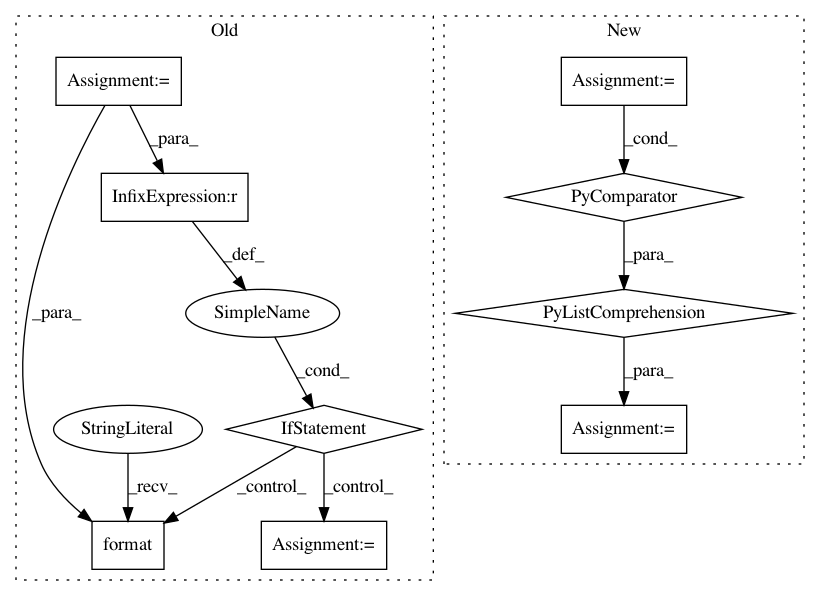

1e619d91956c813d2328a5460da0a273fe135905,hook/zmes_hook_helpers/face.py,Face,detect,#Face#Any#,123
Before Change
print (preds, self.svm_model.classes_)
best_pred_ndx = np.argmax(preds)
best_pred = preds[best_pred_ndx]
loc = face_locations[idx]
if best_pred >= g.config["face_recog_min_confidence"]:
matched_face_names.append(self.svm_model.classes_[best_pred_ndx])
g.logger.debug("face:{} matched with confidence: {}".format(self.svm_model.classes_[best_pred_ndx], best_pred))
else:
g.logger.debug ("face matched:{} but confidence of:{} is less than {}, marking it unknown".format(self.svm_model.classes_[best_pred_ndx], best_pred, g.config["face_recog_min_confidence"]))
matched_face_names.append(g.config["unknown_face_name"])
best_pred = 1 // if unknown, don"t carry over pred prob
matched_face_rects.append((loc[3], loc[0], loc[1], loc[2]))
conf.append(best_pred)
return matched_face_rects, matched_face_names, conf
After Change
// Use the KNN model to find the best matches for the test face
closest_distances = self.knn.kneighbors(face_encodings, n_neighbors=1)
are_matches = [closest_distances[0][i][0] <= g.config["face_recog_dist_threshold"] for i in range(len(face_locations))]
matched_face_names = []
matched_face_rects = []
for pred, loc, rec in zip(self.knn.predict(face_encodings), face_locations, are_matches):
label = pred if rec else g.config["unknown_face_name"]
matched_face_rects.append((loc[3], loc[0], loc[1], loc[2]))
matched_face_names.append(label)
conf.append(1)
return matched_face_rects, matched_face_names, conf
In pattern: SUPERPATTERN
Frequency: 3
Non-data size: 9
Instances
Project Name: pliablepixels/zmeventnotification
Commit Name: 1e619d91956c813d2328a5460da0a273fe135905
Time: 2019-11-15
Author: pliablepixels@gmail.com
File Name: hook/zmes_hook_helpers/face.py
Class Name: Face
Method Name: detect
Project Name: stanford-mast/nn_dataflow
Commit Name: ef4353bd24b9d781c2dfa9cd2146d9b87e63b6f1
Time: 2017-05-01
Author: mgao12@stanford.edu
File Name: nn_dataflow/Scheduling.py
Class Name: Scheduling
Method Name: schedule_search
Project Name: pantsbuild/pants
Commit Name: f231b45ac1770b702a39c26ba9458d7fd1d833a2
Time: 2015-01-12
Author: tinystatemachine@gmail.com
File Name: src/python/pants/backend/core/tasks/what_changed.py
Class Name: ChangedFileTaskMixin
Method Name: _changed_targets